Background
A 30-year-old tool, and the mandate to replace it
Sapphire has been the primary tool for rates derivatives sales at JPMorgan for over 30 years. It handles everything from structuring complex swap trades to managing client inquiries and booking confirmed trades. Salespeople have built decades of muscle memory around its keyboard shortcuts, field layouts, and quirks.
The mandate was to decommission Sapphire and migrate the full sales workflow onto EWS, JPMorgan's internal sales execution platform. The project would then extend to serve external clients on Execute, JPMorgan's single-dealer platform, unifying three experiences under one system.
Discovery
Advocating for research before design
The project came to me with Jiras already written and requirements already defined. The language was deeply technical, filled with system specifications and field-level logic, with no reference to user needs, user flows, or how salespeople actually worked. There was no existing research on this sales group, let alone on rates derivatives, the most complex asset class in the fixed income space.
I pushed back. Over several weeks, I had conversations with my manager and product stakeholders, proposing roadmaps that included dedicated research time. It was a tough sell. The expectation was to start designing from the Jiras. But jumping into wireframes without understanding the people who would use them felt wrong, especially for a tool replacing 30 years of ingrained workflow.
Dedicated time for contextual inquiry research covering all rates desks, not just one product group. The buy-in took weeks, but the result was a research phase that gave us a real understanding of sales workflows before any design work started.
On the floor
With buy-in secured, I conducted in-depth research with salespeople on the trading floor: observing workflows, interviewing them about their tools, and mapping how they moved through a day. The goal was to understand not just what Sapphire did, but why people still depended on it after 30 years.
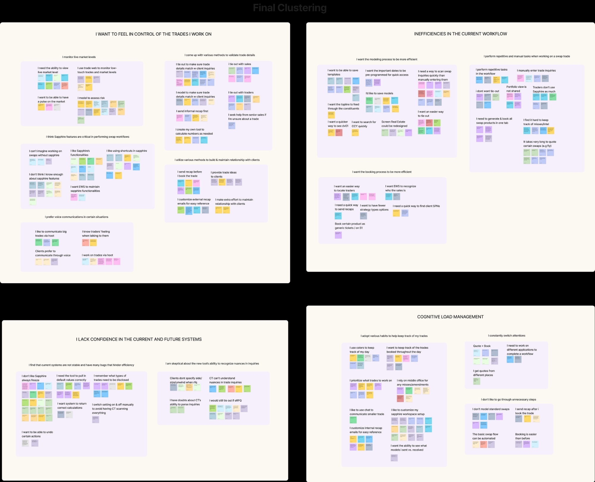
Four themes emerged:
- Monitor live market levels constantly
- Validate trade details against client inquiries
- Sapphire's features feel critical to doing the job
- Prefer voice for big trades where nuance matters
- Repetitive manual data entry across multiple tools
- No way to save templates or reuse models
- Slow, fragmented booking process
- Takes too long to quote certain swaps (e.g. fly)
- Sapphire freezes and has frequent bugs
- Incorrect default values cause errors
- Skeptical the new tool can handle trade nuance
- Doubt CT can accurately parse trade inquiries
- Constantly switching attention across systems
- Personal color-coding systems to track trades
- Quote-to-book flow needs to be more automated
- Standard swaps don't need modeling, just fast booking
Key research insight: ticket layout depends on trade complexity
One finding that directly shaped the design: salespeople naturally wanted to structure complex trades horizontally (multi-leg swaps with all fields visible side by side for comparison) and simple trades vertically (compact, minimal edits, fast execution). The legacy tool didn't adapt to either. It showed everything, always.
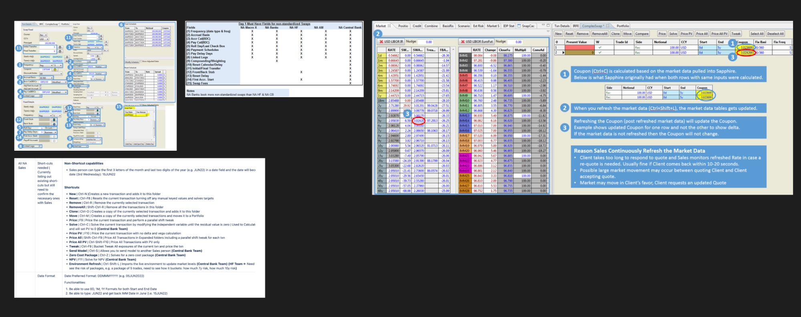
The Sapphire fields analysis confirmed the scale of the problem. Non-standardized swaps require over 35 configurable fields that vary by currency, strategy, and region. Market data refresh was manual, creating stale pricing risk when clients responded within 10-20 seconds of a quote.
The Pivot
The mandate expands
About a year into the research, the business objective shifted. Decommissioning Sapphire and migrating to EWS was no longer the full story.
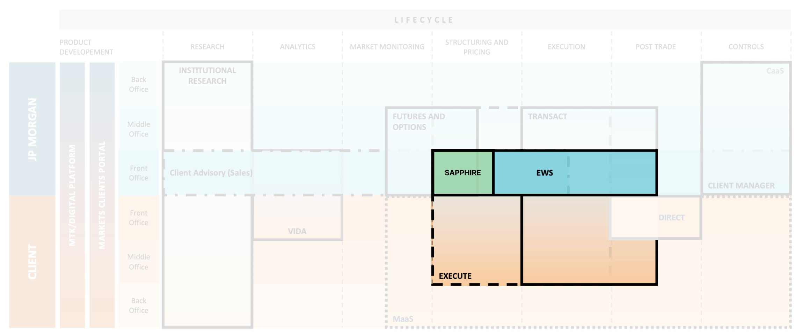
This was a significant expansion. Execute was built for clients, not salespeople. But because it's a single-dealer platform where clients come to trade, both a sales ticket and a client ticket were required. The same trade needed to work for the salesperson structuring it and the client executing it.
I mapped the workflow priorities across the three user groups the platform would need to serve:
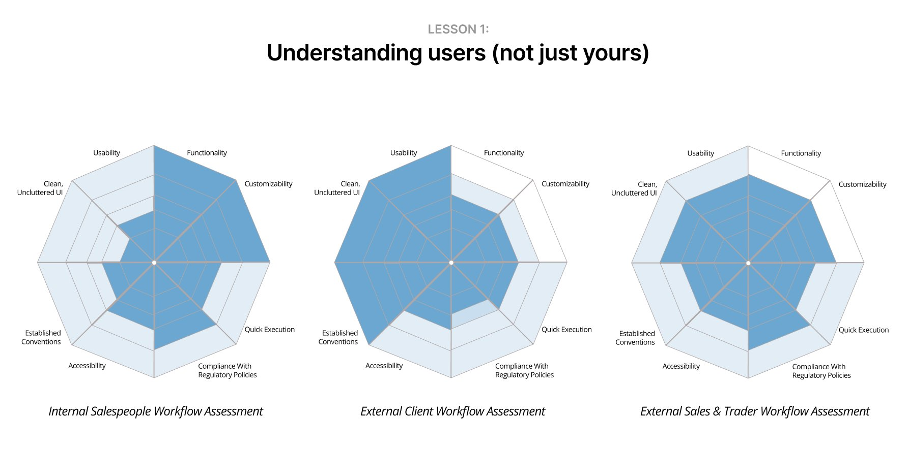
The profiles are visibly different. Internal salespeople need deep customizability and fast execution. External clients need a clean, compliant interface. Designing for one audience would underserve the other. This confirmed the need for a modular architecture: shared trade economics, audience-specific everything else.
The research remained directly relevant. The users were the same, the asset class was the same, the pain points were the same. The platform had changed. The problem hadn't.
Scoping
Knowing what not to build first
Rates derivatives covers a wide spectrum, from plain vanilla interest rate swaps to highly customized non-linear instruments. Building for all of it on day 1 wasn't feasible. The scoping decision was grounded in research friction data and trade volume.
Standard Swaps (IRS)
The most commonly traded product with predictable fields and high volume.
Non-linear / Complex Swaps
Heavily customized instruments requiring specialized structuring.
Standard swaps account for the majority of trading volume. Research confirmed salespeople didn't need to model them, just execute them fast. Starting here meant delivering real value quickly while the complex instruments were scoped for later phases.
Design · Modular Architecture
One ticket, two audiences
Since Execute serves both salespeople and clients, the ticket needed to work for both. Rather than building two separate designs, I created a modular architecture: shared sections for trade economics, and audience-specific sections for workflow and account details. The wireframes below are intentionally lo-fi to highlight the modular structure rather than visual details.
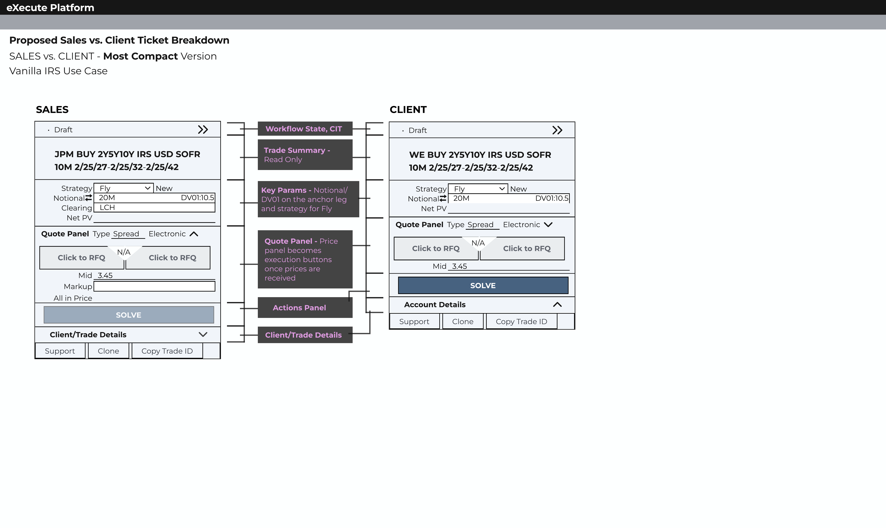
Trade summary, strategy, notional, DV01, quote type, and solve button are identical across both tickets. Changes propagate to both.
Sales sees Client/Trade Details (clearing, trader, client SPN). Client sees Account Details. Sales has additional fields like Markup and Clearing House.
This approach meant shared patterns could evolve once and apply everywhere, while audience-specific needs stayed independent. It also reduced development time since the core economics engine was built once.
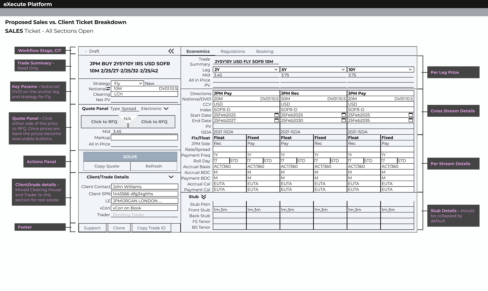
Design · Regulatory Flow
The compliance gate
Before any trade could proceed on Execute, the regulatory checks had to pass. KYC, suitability, and MiFID II compliance were non-negotiable prerequisites. This was a quarter of design-to-dev work, not to build the product, but to unlock the ability to build it.
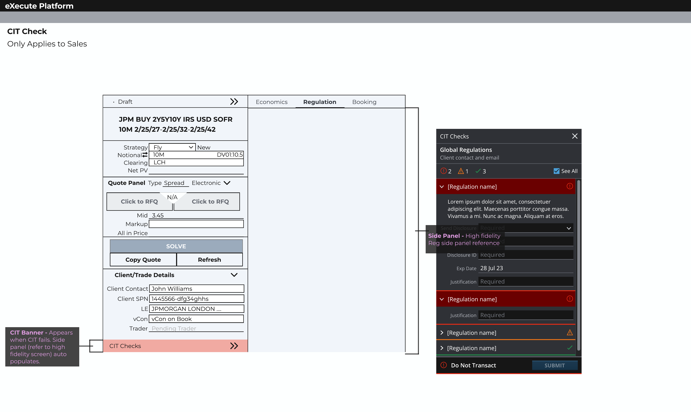
Within the compliance constraint, I focused on reducing friction:
High-fidelity: the full regulatory flow
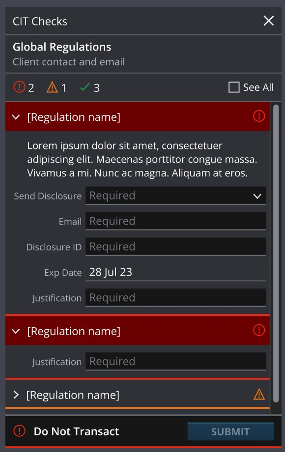
Error rows shown with red highlights. DNT rows expanded by default. Submit locked.
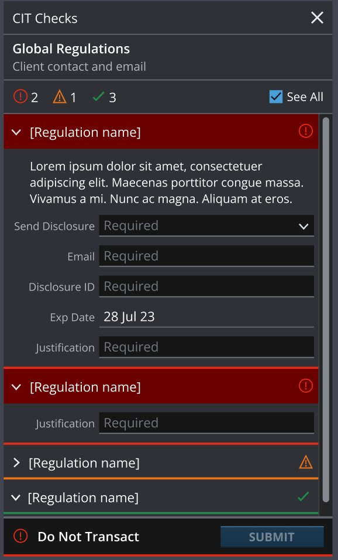
All rows displayed. Grouped: Error → Warning → Success. Warning and success rows collapsed.
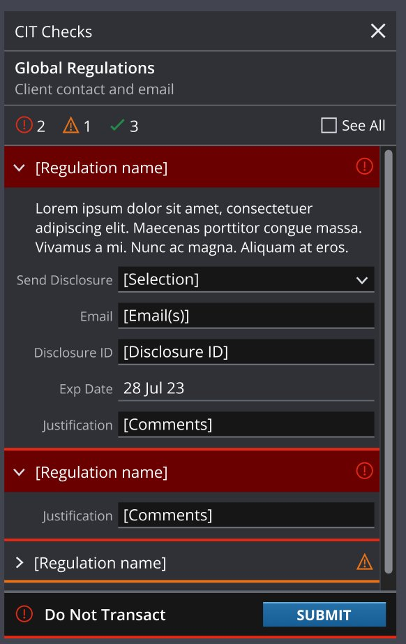
User fills in required fields. Submit button unlocks once content is entered.
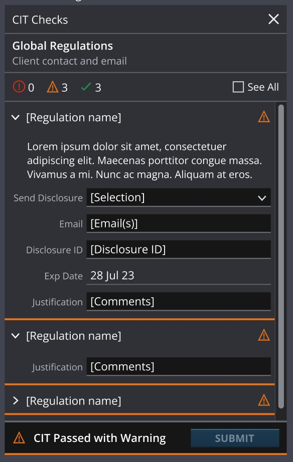
Overridden rows change to warning style. Banner updates to "CIT Passed with Warning."
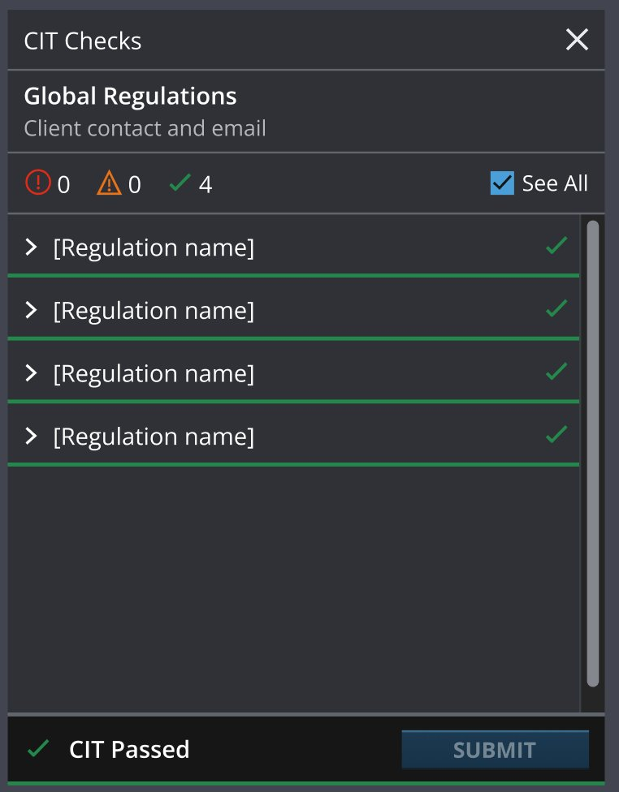
All green. Panel hidden by default. If reopened, all rows collapsed with green checks.
Design · Structuring
Making the complex simple and the simple fast
The discovery research surfaced two connected problems. First, Sapphire exposed all structuring fields at once regardless of trade complexity, creating cognitive overload for standard trades. Second, market data was stale because sales had to manually refresh pricing, introducing risk when clients responded within seconds.
The legacy tool didn't distinguish between what was needed and what was available. Every field was shown, always.
10-20 seconds was the window before prices went stale. Manual refresh introduced risk at the moment speed mattered most.
The design response
Fields auto-display based on the product and strategy selected. A standard IRS shows only the fields needed for that trade, displayed vertically because it's space-efficient and most structuring fields are readily available on the ticket. A more complex multi-leg fly swap reveals the full horizontal layout by default, with per-leg details side by side for comparison. Sales can switch between horizontal and vertical as they wish.
For pricing, live market data is built directly into the ticket. Sales always see the current rate without manual refresh.
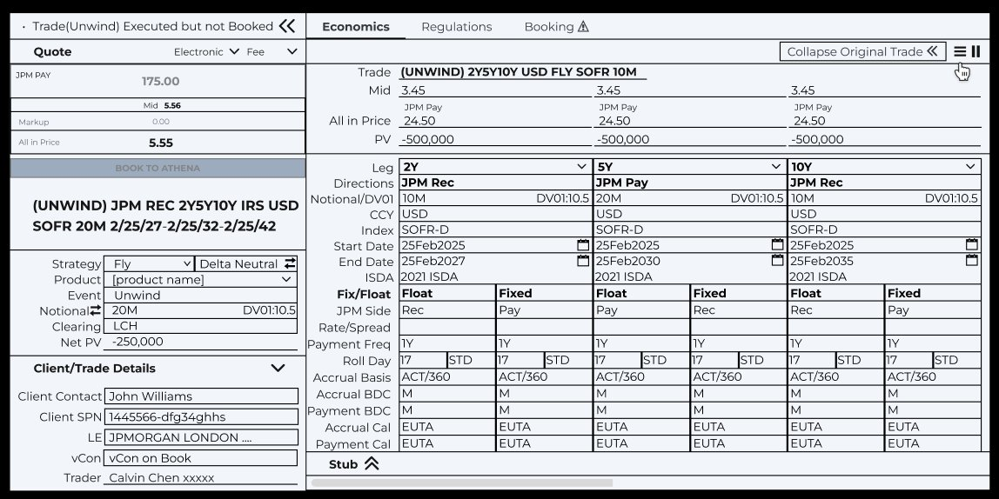
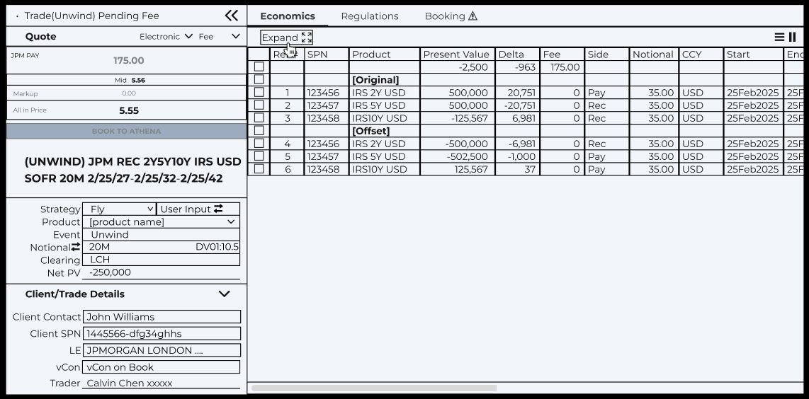
The goal wasn't to simplify rates derivatives structuring. That's not possible. The goal was to make the common case fast and the complex case accessible. Standard swaps should feel effortless. Everything else should be one step away.
Testing & Validation
Testing the core trading flow
Before moving to high fidelity, I ran a mid-fi design review with stakeholders to align on scope, content structure, parameter editability, and visual hierarchy, explicitly scoping out visual details and sample data accuracy for this round.
With alignment secured, I moved into high-fidelity design of a vanilla IRS ticket incorporating all the agreed changes. I then ran usability testing of the core ticket trading flow with sales users across global rates desks.
Methodology
I used two methods to cover breadth and depth:
Participants completed a Qualtrics survey at their convenience, clicking through a prototype simulating the IRS Outright sales electronic flow from "Ready for RFQ" to "Booking Success." Metrics collected: task completion rate, time to completion, and CSTAT score. Participants also selected their preferred RFQ panel layout from four options.
The designer and product manager were present with sales participants. Each individual clicked through the same prototype and provided feedback on the same key screens as the survey.
Results
(NA, EMEA, APAC)
of the E2E Flow
(most tasks except RFQ)
E2E Flow (Unmoderated)
(Unmoderated)
The 92% task success rate validated the overall flow, but the RFQ task stood out: 59% of participants failed it due to unclear click areas. This became the top priority for redesign.
RFQ panel redesign
Participants evaluated four RFQ panel layout options based on their mental model and trading habits. The results were clear:
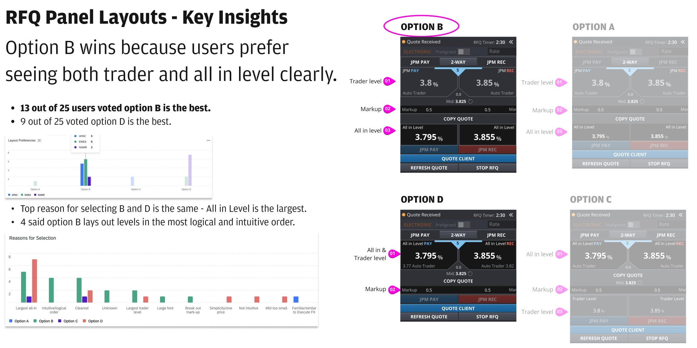
52% of users selected Option B. Top reasons: All-in Level is the largest and most prominent. The order of information (Trader Level → Markup → All-in Level) is the most logical and intuitive.
36% of users selected Option D. Preferred by sales who don't trade markups often. Simpler presentation with All-in Level still prominent. Recommended as a feature behind settings for users to toggle based on their trading style.
Outcomes
Impact
The product is live and expanding. Rates single-currency IRS with offset capability is live for global desks across all currencies. EM currencies are live in EMEA and APAC. LATAM currency onboarding is in progress. Swaptions are in UAT with a pilot planned.

This is an ongoing project. The numbers above reflect a product still in active expansion, not a finished state. The foundation built during this phase (modular ticket architecture, regulatory framework, structuring engine) is what makes each subsequent product launch faster.
Reflection
What I learned
This project taught me that replacing a 30-year-old tool isn't a design problem. It's a trust problem. Salespeople had built their careers around Sapphire's quirks. Convincing them that a new platform could handle the same complexity required showing, not telling.
The discovery research was the most valuable investment. Floor observations and interviews gave me a level of understanding that no requirements document could have provided. When I could speak to a salesperson's workflow in their own language, the resistance dropped.
If I could do something differently, I'd push for earlier access to real trade data during the design phase. Much of the structuring work required understanding edge cases that only surfaced when actual trades were run through the system. Getting real data earlier would have shortened the iteration cycle.